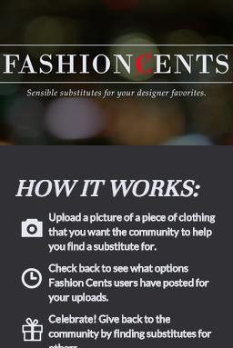
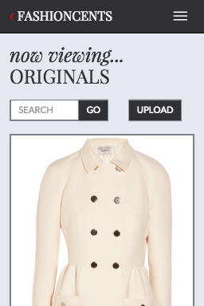

FASHIONCENTS


Format: Mobile Web Application
Redesigning Affordable Fashion
Read More
FashionCents was developed for the mobile webspace to rethink how individuals can express themselves on a budget. Created for the Stanford Class CS147, FashionCents uses the power of crowdsourcing to link people with styles and items that they love. Users can use the app to ask the public for alternatives to expensive designer items or provide others with fashion suggestions. FashionCents was designed to be a lifestyle app and is a fun site to browse.